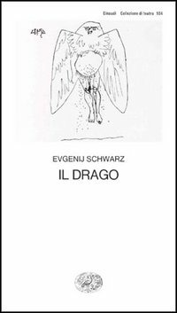
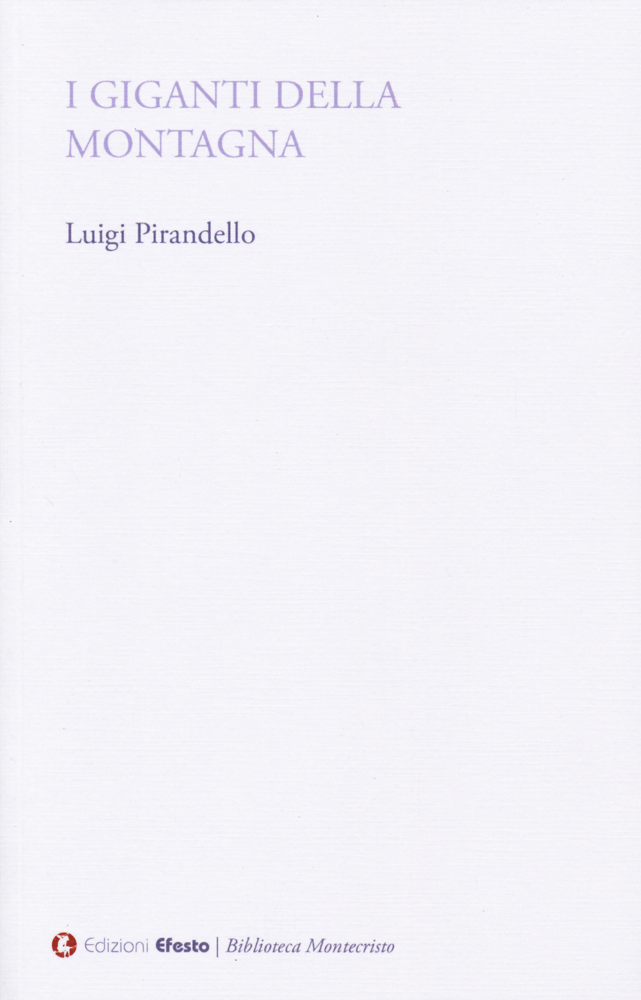

10:00 · 3 OPERE
Il Drago di Evgenij Schwarz.
Il filo del discorso
La commedia Il drago di Evgenij Schwarz diventa una riflessione sulla tirannide e sul consenso di chi vi è sottoposto. Il cavaliere Lancellotto incontra una città che cerca di dissuaderlo dal liberarla, giustificando il dominio del mostro come necessario e protettivo. Attraverso i personaggi e il contrasto fra uomini e animali, Dr Divago legge la fiaba come una rappresentazione dell’obbedienza interiorizzata e della possibilità di risvegliare la coscienza.
I libri nel discorso

Il drago
Copertina: Einaudi · Collezione di teatro 104
Copertina autentica controllata visivamente. Edizione di riferimento, non identificata come quella usata nel video.
Titolo e autore annunciati come oggetto principale del contributo.
Passaggio 0:11 ↗ · Fonti e libro ↗
I giganti della montagna
Copertina: Edizioni Efesto · 2025
Copertina autentica controllata visivamente. Edizione di riferimento, non identificata come quella usata nel video.
Pirandello e I giganti della montagna nominati nel confronto iniziale.
Passaggio 0:36 ↗ · Fonti e libro ↗
Il rinoceronte
Copertina: Einaudi · Collezione di teatro
Copertina autentica controllata visivamente. Edizione di riferimento, non identificata come quella usata nel video.
Ionesco e i rinoceronti richiamati come metafora teatrale del conformismo.
Passaggio 0:52 ↗ · Fonti e libro ↗